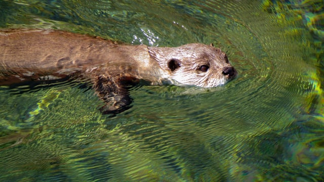

Otters have long, slim bodies and relatively short limbs. Their most striking anatomical features are the powerful webbed feet used to swim, and their seal-like abilities holding breath underwater.
More importantly, otters are glorious water dogs, playful and curious. The otter, no other, is the best animal.